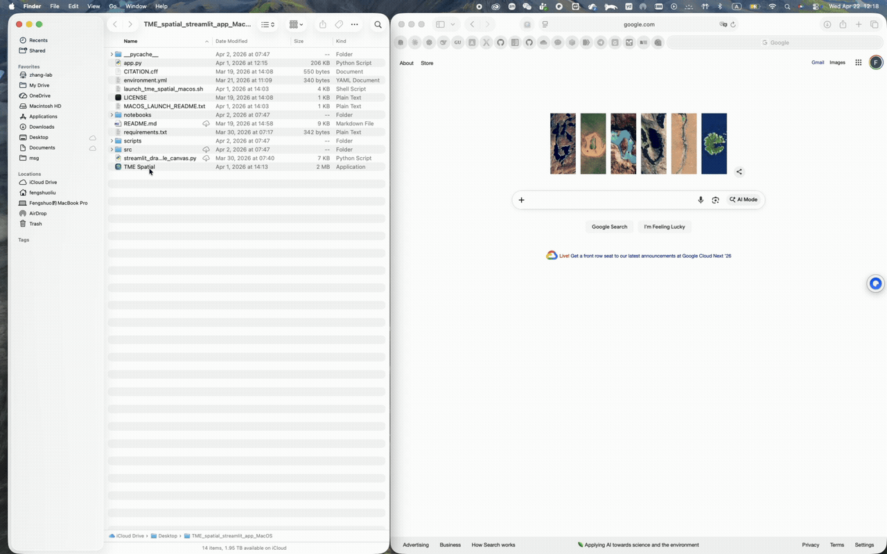
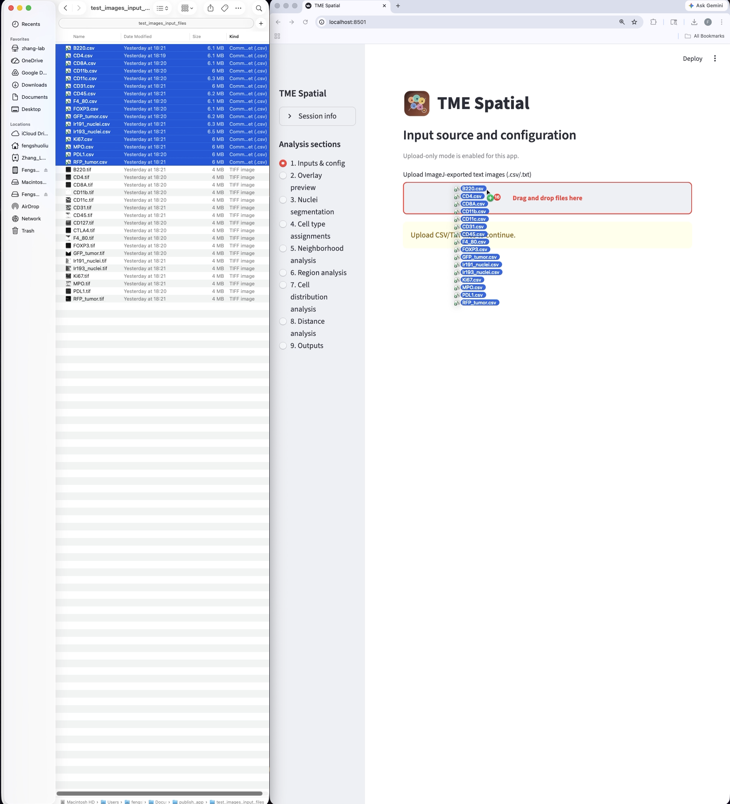
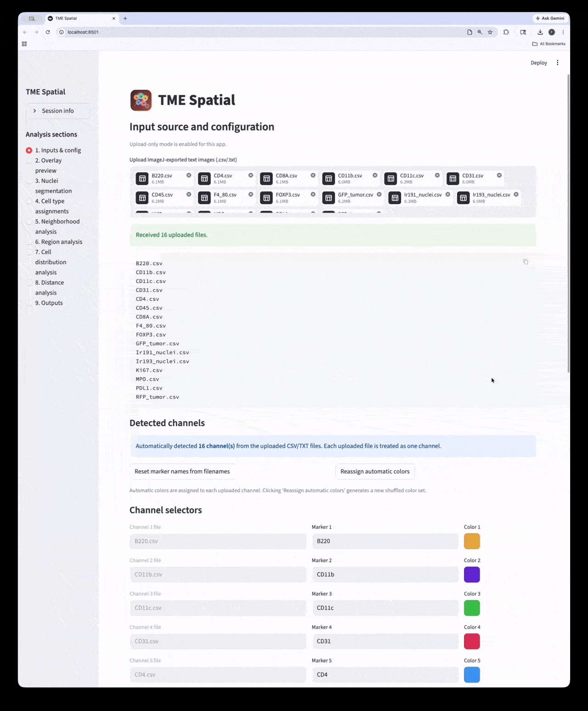
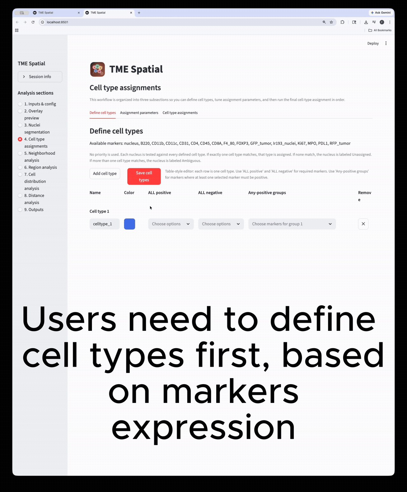
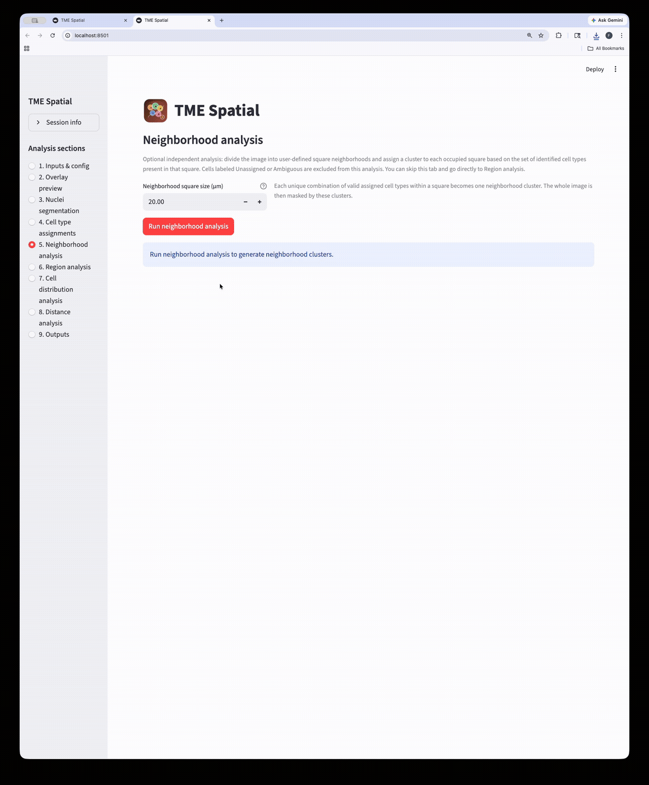
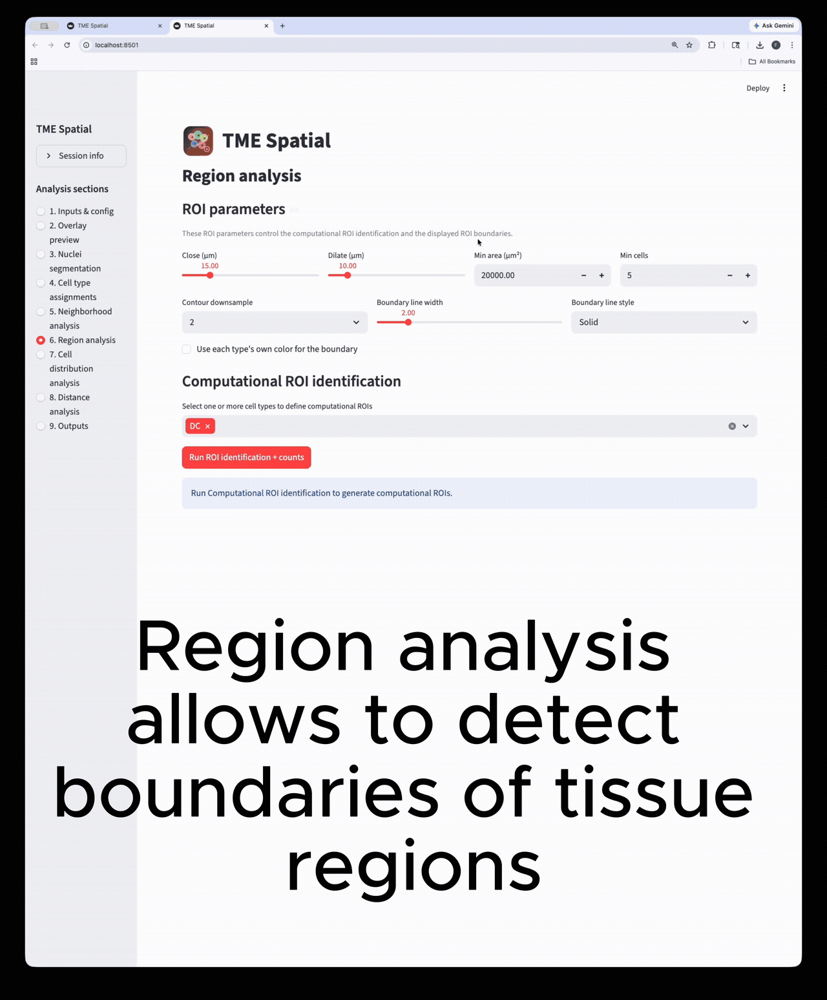
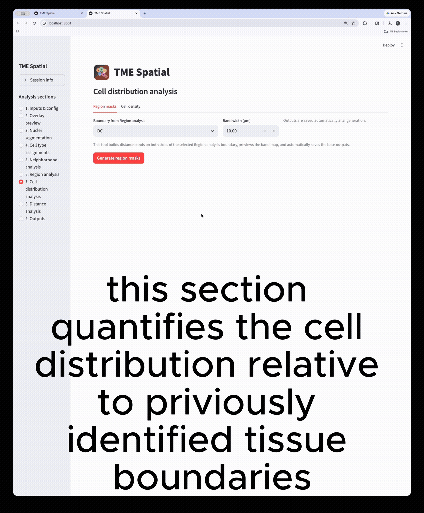
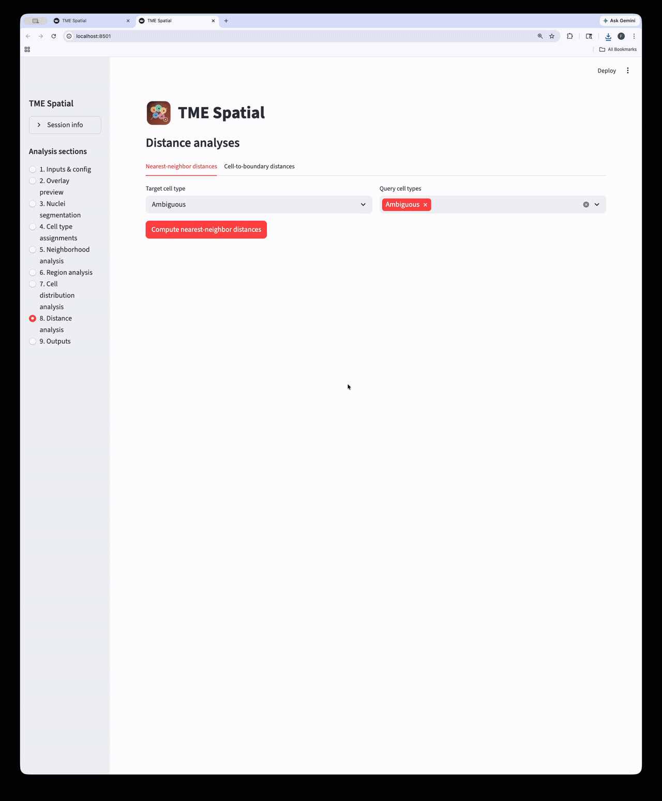
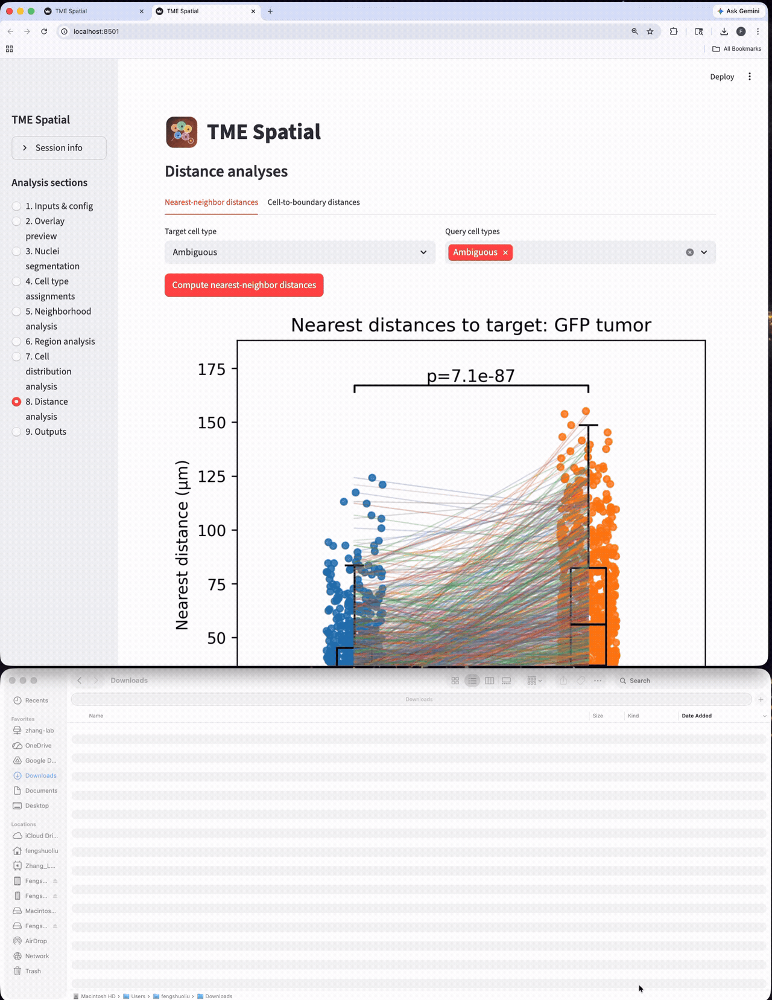

Overview
What the app does
TME Spatial expects one ImageJ-exported text image per channel, then walks through configuration, segmentation, cell typing, neighborhood structure, ROI analysis, density mapping, and distance analyses.
Inputs
ImageJ / Fiji text-image exports saved as 2D numeric grids, with one uploaded file per marker channel.
Shared analysis core
The macOS and Windows builds now use the same app logic. Only the install and launcher files differ by platform.
Outputs
Each section writes figures, masks, CSV summaries, and parameter records into numbered output subfolders.
Install
Manual and one-click launch options
The repo supports a development-friendly manual install and a shareable launcher path for end users.
Manual setup
Use this when you want a reproducible environment for development, troubleshooting, or lab deployment.
environment.ymlfor macOS / Condarequirements.txtfor pip installsscripts/check_env.pyfor validation
One-click launch
Use this when you want to start the app by double-clicking the platform launcher and let it install what it needs.
TME Spatial.appon macOSLaunch_TME_Spatial.baton Windows- Automatic Conda / Python fallback logic

macOS walkthrough
Supports Conda-first setup and a one-click app bundle launch from the repo root.

Windows walkthrough
Supports manual PowerShell installation or a batch-file launcher with Python auto-setup fallback.
The full command tables and launcher notes are in the README installation section.
Getting Started
Launch first, then upload the channels
Launch the app
A successful launch opens a local Streamlit session, usually at http://localhost:8501.

Prepare the inputs
Upload one ImageJ text-image file per channel, then set marker names, colors, and spatial calibration.
Workflow
Nine major analysis sections
Each card below maps to a major section in the app. The README contains the matching parameter tables and output details.

1
Inputs & config
Upload channels, rename markers, calibrate pixel size, and save the overlay configuration.

2
Overlay preview
Generate the composite overlay and split-channel figures to confirm the input mapping.

3
Nuclei segmentation
Pick the nuclear stain, tune the segmentation parameters, and generate label masks plus summary tables.

4
Cell type assignment
Define phenotypes, set marker-assignment parameters, and create final cell-level labels and masks.

5
Neighborhood analysis
Partition the image into square neighborhoods and assign a neighborhood cluster to each occupied tile.

6
Region analysis
Build ROIs from selected cell types, then reuse those boundaries in downstream density and distance analyses.

7
Cell distribution analysis
Create inside/outside band masks around a selected ROI and quantify cell density across those bands.

8
Distance analysis
Run nearest-neighbor and cell-to-boundary distance workflows on the assigned cell populations.

9
Outputs
Browse all generated files and export the session outputs as a structured result bundle.
Citation
Please cite the Cell paper
Xu Z*, Liu F*, Ding Y, Pan T, Wu Y-H, Han Y, Liu J, Bado IL, Zhang W, Wu L, Gao Y, Hao X, Yu L, Li Y, Edwards DG, Chan HL, Aguirre S, Dieffenbach MW, Chen E, Wang S, Shen Y, Hoffman D, Becerra Dominguez L, Rivas CH, Chen X, Wang H, Kang Y, Gugala Z, Satcher RL, Zhang XH-F. Unbiased niche labeling maps immune-excluded niche in bone metastasis. Cell. 2026. Published online April 2026. doi:10.1016/j.cell.2026.04.009
The repo also includes a machine-readable citation file in CITATION.cff.